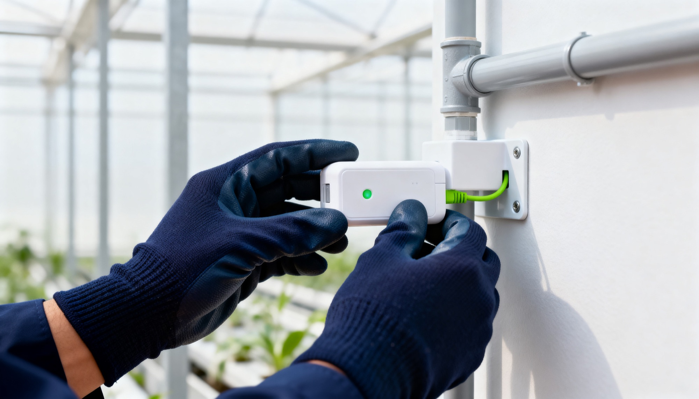

Manage every device.
At any scale.
Fleet provisioning, OTA firmware updates, health monitoring, remote configuration, and security enforcement — every device in your fleet visible, reachable, and updatable from a single platform, from first activation through decommission.


One platform.
Every device. Full control.
Managing IoT fleets at scale exposes every shortcut taken at launch — devices onboarded manually, firmware that can't be updated in the field, health issues discovered only when something fails. Meritech Device Management removes those limits: from zero-touch provisioning and secure onboarding through the full device lifecycle, every device in your fleet is visible, reachable, and updatable from a single platform.
Everything your fleet
needs, managed.
Activation to retirement.
Devices are authenticated, registered, and configured at activation — zero-touch, at scale — with security policies and connectivity profiles applied automatically before the first message is sent.
Continuous telemetry streams from every endpoint to a single dashboard — battery, signal, uptime, errors — with configurable alerts that fire before thresholds are breached, not after a failure is reported.
Firmware and configuration changes are delivered over the air in staged rollouts with automatic rollback — keeping the fleet current without field visits, unplanned downtime, or manual co-ordination.
Remote configuration, command dispatch, security enforcement, and fleet analytics from a single platform — so the fleet keeps running as it grows, without adding headcount proportionally to device count.
Is this the right fit?
Operations teams running connected assets — in predictive maintenance, smart infrastructure, or energy metering — who need visibility and control without manual intervention at every device.
Engineering and product organisations moving from pilot to production who need device management designed in from day one — not bolted on after the first field failure — with OTA updates and remote diagnostics ready at launch.
Connectivity and platform teams responsible for heterogeneous device populations across multiple protocols and geographies — who need a management layer with enforced security policies, certificate management, and a unified audit trail.
Before you choose a
device management service.
A fleet you can't manage
is a fleet you can't trust.
From zero-touch provisioning to OTA firmware updates, health monitoring, and security enforcement — Meritech Device Management puts every endpoint in your fleet under a single pane of glass.